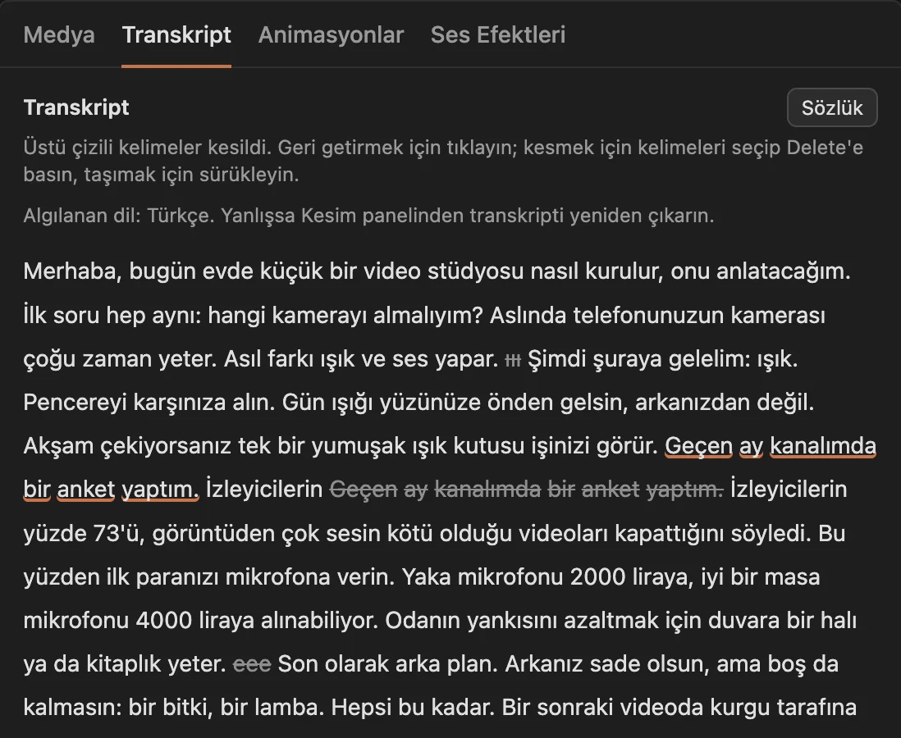
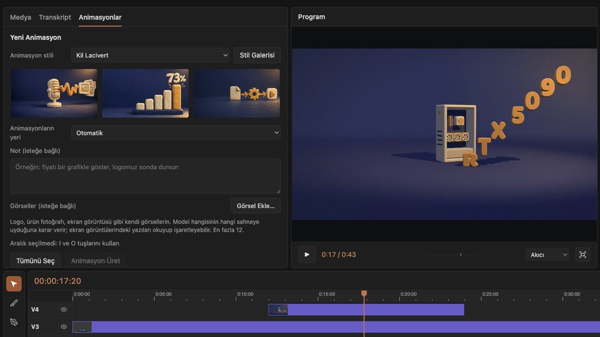
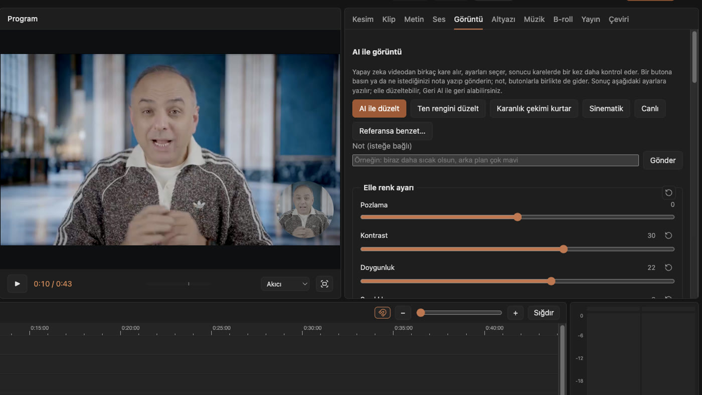
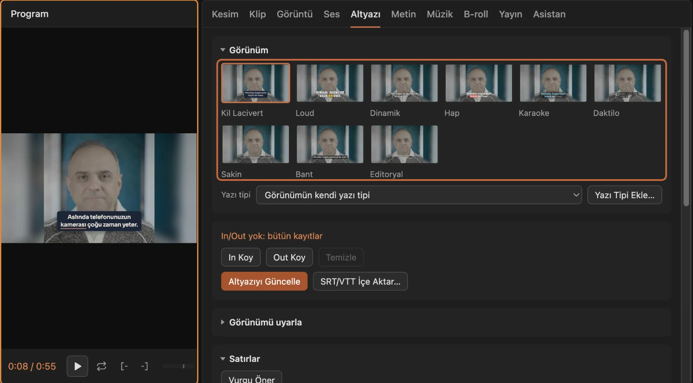
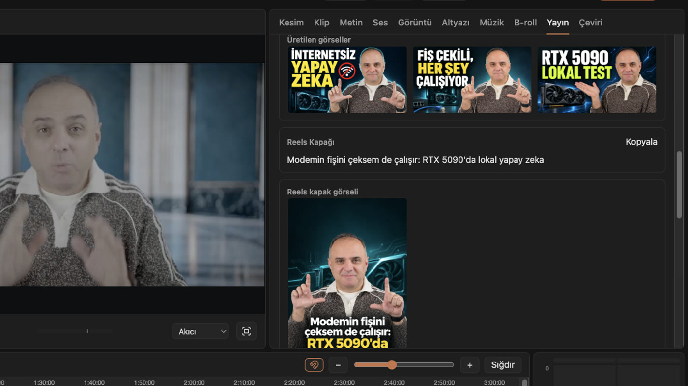
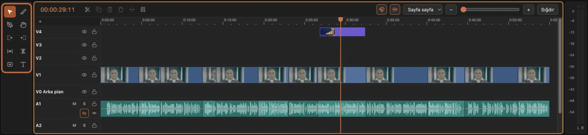
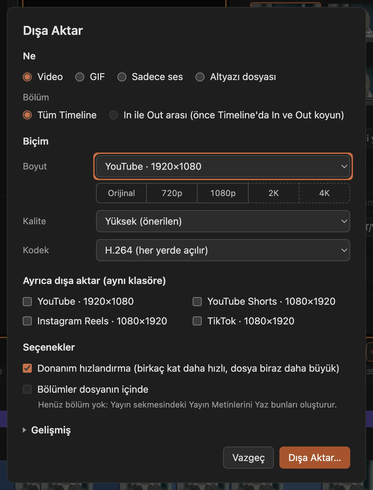
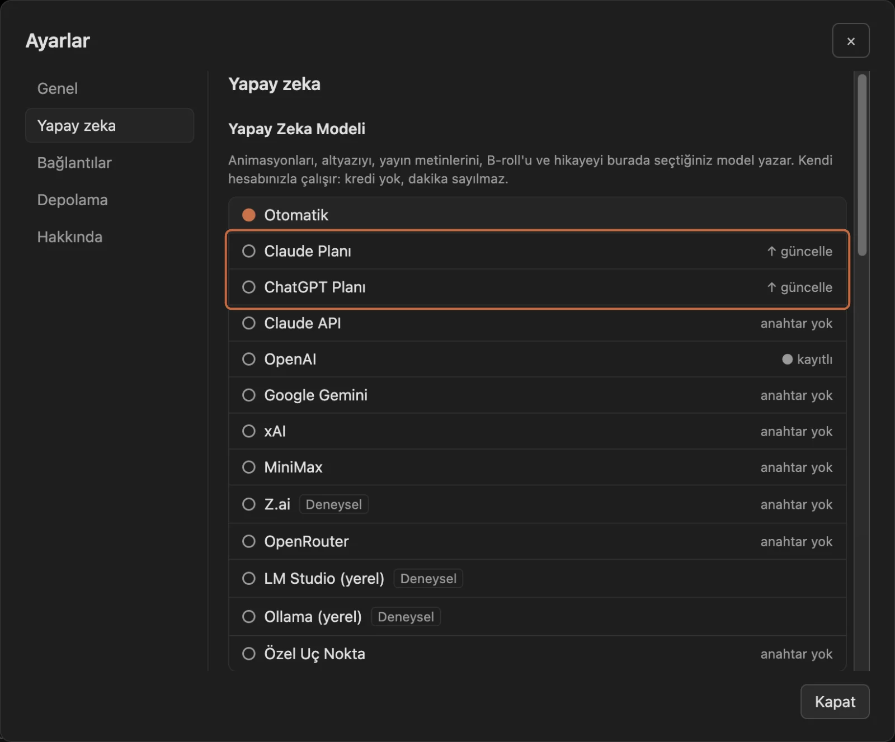
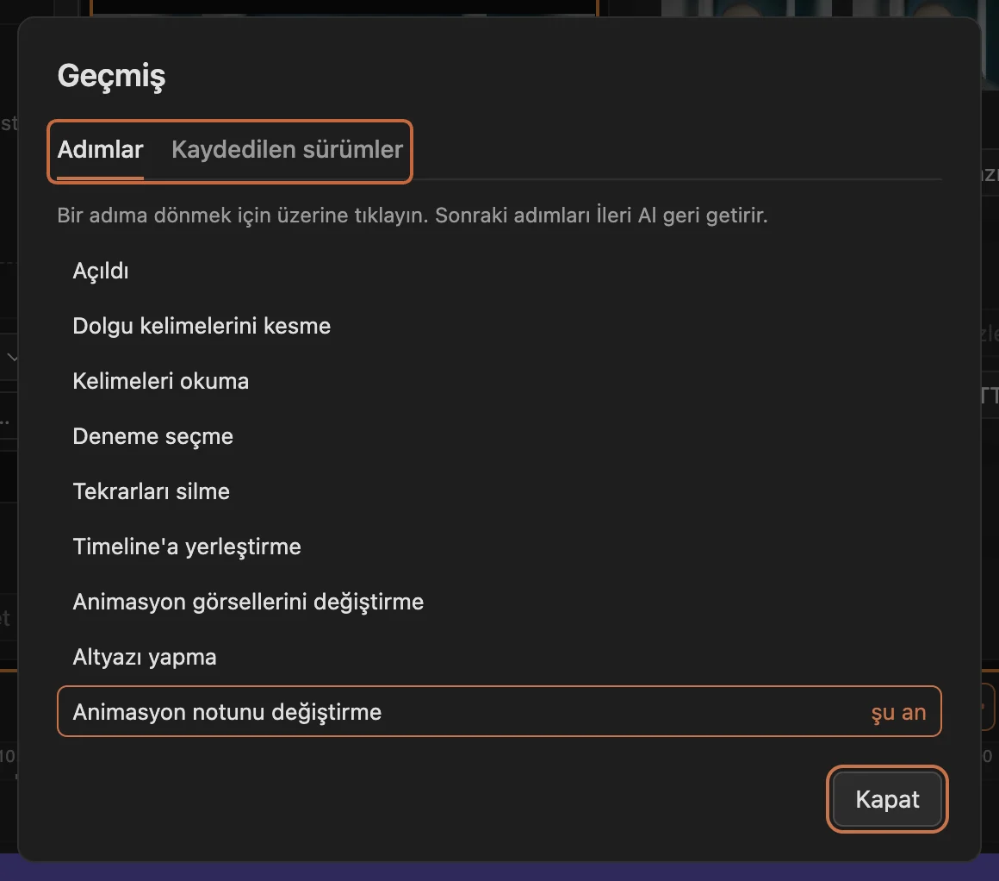

Kilnframe Desktop'ın yaptığı her şey.
Kesim, animasyon, görüntü, ses, altyazı ve yayın tek uygulamada. Yapay zekanın yaptığı her şey yapıldığı yerde görünür; değiştirilir, geri alınır.

Kesimi senin yerine yapar.
Konuşman kendi bilgisayarında yazıya dökülür. Duraksamalar, ııı'lar ve iki kez söylediğin cümleler gider; emin olmadığını sana sorar.

| Transkript Çıkar | Konuşma bu bilgisayarda yazıya dökülür. İnternet gerekmez. | Kılavuz → |
| Boşlukları Kes, Yumuşak'tan Sıkı'ya | Sessizlikler istediğin sıkılıkta, tek tıkla gider. | Kılavuz → |
| Dolgu Kelimelerini Kes | “Iıı, eee” kesilir; anlamlı olabilen kelimeler sorulur. | Kılavuz → |
| Tekrarları ve Gereksizleri Temizle | Yapay zeka modelin yeniden söylediğin cümleleri ve izleyiciye olmayan konuşmaları bulur. | Kılavuz → |
| Emin olunmayanlar ve denemeler | Emin olmadığı yerde sen karar verirsin: Kes ya da Kalsın; Bu Denemeyi Kullan. | Kılavuz → |
| Benzer Bölümleri Bul | Aynı şeyi iki kez anlattığın yerleri gösterir. | Kılavuz → |
| In ve Out | Kesimi yalnızca seçtiğin aralıkta yap. | Kılavuz → |
Videoyu yazı gibi düzenle.
Transkriptte bir kelimeyi sil, videodan kesilsin. Üzerine tıkla, geri gelsin.

| Transkript | Kelimeleri sil, geri getir, taşı; kesilen bir kelimenin üzerinde bekle, neden gittiğini gör. | Kılavuz → |
| Kelimeleri Düzelt… ve Sözlük | Yanlış duyulan adı düzelt; altyazı, çeviri ve bölümler doğrusunu kullanır. | Kılavuz → |
| Sesle Düzelt… | Yanlış söylediğin kelimeyi yaz, kendi sesinle yeniden okunsun. | Kılavuz → |
| Transkriptte arayın | Bir sözü bul, oraya git. | Kılavuz → |
| Cümleleri taşı, Kayıt Sırasına Dön | Anlatım sırasını yazıda değiştir. | Kılavuz → |
Animasyonları yazar.
Bir aralık seç, Kilnframe anlattığın konuya uygun sahneler yazsın: başlıklar, grafikler, 3D, el çizimi çizgiler, hareketli yazılar.

| Animasyon Üret | Seçtiğin aralık için kareye oturan sahneler. | Kılavuz → |
| Not ve Görseller (isteğe bağlı) | Notla, logonla ya da bir fotoğrafla yönlendir. | Kılavuz → |
| Sahne kareleri: Sahneyi Yeniden Yaz, Onayla ve Oluştur | Her sahneyi çizilmeden önce gör, istediğini değiştir. | Kılavuz → |
| 137 animasyon stili, 37'si 3D | Tür, ruh hali, renk ve uygun olduğu işe göre filtrele. Her stil kendi sesleriyle gelir. | Kılavuz → |
| Kendi Stiliniz | Beğendiğin görsellerden kendi stilini çıkar. | Kılavuz → |
| Kişi önde | Animasyon senin arkandan geçer. | Kılavuz → |
Görüntü ve renk.
Düzgün ten rengi ve aydınlık görüntü tek tıkla; istersen her ayar elle.

| AI ile Düzelt, Ten Rengini Düzelt, Karanlık Çekimi Kurtar, Referansa Benzet… | Görebildiğin, değiştirebildiğin ve geri alabildiğin yapay zeka rengi. | Kılavuz → |
| Kayıtları Eşleştir | İki kamerayı birbirine benzetir. | Kılavuz → |
| Renk görünümü ve Görünüm yoğunluğu | Sinematik gibi hazır görünümler, istediğin yoğunlukta. | Kılavuz → |
| Temel düzeltme, Renk eğrileri, Renk tekerlekleri, LUT | Her ayar elle. | Kılavuz → |
| Dalga formu, RGB parade, Vektörskop | Rengi ölçerek ayarla. | Kılavuz → |
| Önce/Sonra, Bölünmüş görünüm | Bir ayarın etkisini yan yana gör. | Kılavuz → |
| Cilt yumuşatma, Keskinleştir, Kenarları karart | Son rötuşlar. | Kılavuz → |
| Kadraj ve arka plan: Kişiyi takip et, Konuşmacının arkası | Dikey videoda bile konuşan kadrajda kalır. | Kılavuz → |
| Kesimlerde yakınlaştır | Kesim atlama gibi değil, kamera değişimi gibi görünür. | Kılavuz → |
Ses.
Doğru seviyede temiz bir ses; sen konuşurken geri çekilen bir müzik.

| Gürültü Temizleme | Odanın uğultusunu alır. | Kılavuz → |
| Ses ayırma (yapay zeka) | Konuşmayı tutar, arka planı atar; bu bilgisayarda. | Kılavuz → |
| Yankı azalt | Boş odanın yankısını azaltır. | Kılavuz → |
| Ses seviyesi: YouTube (-14 LUFS), Podcast (-16 LUFS) | Platforma uygun seviye, tek seçimle. | Kılavuz → |
| Konuşurken kısma (Ducking) | Sen konuşurken müziğin kısılır. | Kılavuz → |
| Netlik, Çamur azalt, Sert s azalt, Sessiz kısımları kapat | Yayın sesi, iz iz ya da klip klip. | Kılavuz → |
| Mikser | Konuşma, efekt, müzik ve ana çıkış, ölçerleriyle. | Kılavuz → |
| Müzik Yap | Videonun bölümlerine göre müzik; Gemini ya da ElevenLabs anahtarıyla. | Kılavuz → |
| Ses Efektleri, Metinden Ses Efekti Oluştur | Hışırtı, pıt, tık: ara, dinle, ekle; ya da tarif et. | Kılavuz → |
| Seslendirme kaydı, Metinden seslendirme | Videonun üstüne konuş ya da yazdığını okut. | Kılavuz → |
| Harici mikrofon | Ayrı bir mikrofon kaydı sesinden eşleşir. | Kılavuz → |
Ekran eğitimleri için.
Uygulamadan çıkmadan ekranını ve kameranı kaydet; yüzün köşeye oturur, görüntü çalıştığın yere yakınlaşır.

| Ekranı ve Kamerayı Kaydet… | Ekran, kamera ve mikrofon uygulamanın içinde kaydedilir. | Kılavuz → |
| Kamera: Köşede, Yan yana, Tam ekran yüz | Kamera ve ekran sesinden eşleşir; yüzün köşeye oturur. | Kılavuz → |
| Kamera bölümleri: Bu bölüm, Buradan itibaren | Ders ilerledikçe kameranın yerini değiştir. | Kılavuz → |
| Ekran yakınlaştırma: Hareketleri Bul ve Yakınlaştır | Yazdığın ve tıkladığın yere yakınlaşır. | Kılavuz → |
| Bekleme anlarını hızlandır | Kurulum ve yükleme beklemeleri kesilmez, hızlanır. | Kılavuz → |
| Fare vurgusu, Tıklama Sesi Ekle | İmleç ve tıklamalar görünür ve duyulur. | Kılavuz → |
| Şekiller ve çıkartmalar | Ok, vurgu kutusu, Abone ol düğmesi. | Kılavuz → |
Birden çok kamera ve konuşmacı.
Kameralar sesinden eşleşir, kesim konuşanı takip eder.
| Kamera ve Konuşmacı Mikrofonu Ekle… | Kameralar ve mikrofonlar sesinden eşitlenir. | Kılavuz → |
| Konuşanı Takip Et | Kesim, konuşan kişinin kamerasına geçer. | Kılavuz → |
| Açılar | Bütün açılar izleyicide bir arada; rakam tuşuyla birini seç. | Kılavuz → |
| Sanal çoklu kamera: Konuşana Göre Kadrajla | Tek bir geniş çekimden yakın planlar. | Kılavuz → |
Altyazı, metin ve grafikler.
Seçtiğin görünümde tek tıkla altyazı; girişi ve çıkışı hareketli başlıklar.

| Altyazı Yap, Görünüm | Kelimelerinden, hazır bir görünümde altyazı. | Kılavuz → |
| Satırlar: İmleçten Böl, Sonrakiyle Birleştir | Satırı, zamanlamasını ve vurgusunu düzelt. | Kılavuz → |
| Vurgu, Emoji | Önemli kelimeyi renklendir, emoji ekle. | Kılavuz → |
| SRT/VTT İçe Aktar… | Elindeki altyazıyı getir. | Kılavuz → |
| Metin şablonları: Büyük başlık, Alt bant, Bölüm kartı… | Kendi giriş ve çıkışıyla başlıklar. | Kılavuz → |
| Marka kitleri | Giriş, kapanış, renkler, yazı tipleri ve altyazı görünümü her projede hazır. | Kılavuz → |
| Yazı Tipi Ekle… | Kendi yazı tiplerini kullan. | Kılavuz → |
Yayına hazır.
En güçlü anlardan Shorts, her video için başlık, açıklama ve bölümler, bir de çeviriler.

| Kısa Kesitleri Bul | Uzun videodan tek başına izlenen dikey kesitler. | Kılavuz → |
| Kurgu Olarak Kaydet, Dikey Kopya (9:16) | Kısa videoyu kendi kurgusu olarak düzenle. | Kılavuz → |
| Yayın Metinlerini Yaz | Başlıklar, bölümlerle açıklama, etiketler ve kapak fikirleri. | Kılavuz → |
| Çeviri, Seslendir | Başka dillerde altyazı; istersen seslendirilmiş. | Kılavuz → |
| Konudan Hikaye Yap | Kaydın yok mu? Bir konudan seslendirilmiş bir taslak. | Kılavuz → |
Gerçek bir editör.
Bütün bunların altında, alıştığın programın araçları, izleri ve kısayolları.

| Seç, Jilet, Hız, Birleşimi kaydır, İçeriği kaydır, Kalem, Yazı | Alıştığın kurgu araçları, tuşlarıyla. | Kılavuz → |
| Video İzi Ekle, Kilitle, Sesi Kapat | İstediğin kadar iz. | Kılavuz → |
| Çapraz Geçiş Ekle, Siyaha Geçiş Ekle | Geçişler ve ses için çapraz geçişler. | Kılavuz → |
| Hareket ve anahtar kareler | Boyutu, konumu, opaklığı, döndürmeyi ve kırpmayı canlandır. | Kılavuz → |
| Hız…, Tersine Çevir, Kareyi Dondur, Ağır çekim | Hız oyunları, akıcı ağır çekim dahil. | Kılavuz → |
| Yeşil perde | Arka plan rengini kaldır. | Kılavuz → |
| Yüzleri ve alanları bulanıklaştır | Bir yüz seç, bulanıklık onu takip etsin. | Kılavuz → |
| Resim içinde resim, Bölünmüş ekran | Herhangi iki klip yan yana. | Kılavuz → |
| Ayarlama katmanı | Tek bir renk ayarı birçok klibe birden. | Kılavuz → |
| Birleşik Klip Yap, Kurgular | İç içe kurgular. | Kılavuz → |
| Vuruşları Bul, işaretçiler | Müziğin vuruşuna kes. | Kılavuz → |
| Kılavuzlar, görüntüdeki tutamaçlar | Güvenli alanlar ve Shorts düğmeleri; izleyicide sürükleyerek yerleştir. | Kılavuz → |
| Görüntülerde Bul | “Masada bir dizüstü” yaz, çekimi bul. | Kılavuz → |
Dışa aktarma.
Platformun boyutu hazır, birkaç platform birden, ekran kartınla.

| Boyut: YouTube, YouTube Shorts, Instagram Reels, TikTok | Platformun boyutu hazır. | Kılavuz → |
| Kodek: H.264, HEVC / H.265, ProRes; Saydam arka plan | Paylaşmak, arşivlemek ya da düzenlemeye devam etmek için. | Kılavuz → |
| Ayrıca dışa aktar | Birkaç platform tek seferde. | Kılavuz → |
| Altyazı dosyası, Bölümler dosyanın içinde | YouTube'a yüklemeye hazır. | Kılavuz → |
| GIF, Kareyi Dışa Aktar… | Kısa bir döngü ya da tek bir kare. | Kılavuz → |
| Donanım hızlandırma | NVIDIA, AMD, Intel ve Apple'da hızlı. | Kılavuz → |
Kendi yapay zekan, Asistan ve MCP.
Yapay zeka işleri kendi hesabınla çalışır. Bizden alınacak kredi yok.

| Claude Planı, ChatGPT Planı | Aboneliğin yeter; ek ücret yok. | Kılavuz → |
| API Anahtarı, LM Studio, Ollama | Anahtarla ya da yerel bir modelle tamamen bilgisayarında. | Kılavuz → |
| Asistan | Bir değişikliği kendi sözlerinle iste; adım adım yapar. | Kılavuz → |
| Yapay zekanın son yaptıkları | Her yapay zeka adımı görünür, Geri Al ile döner. | Kılavuz → |
| Yapay zeka asistanlarını bağla (MCP) | Claude, ChatGPT, Cursor ve Codex projeni düzenleyebilir. | Kılavuz → |
Güvenli ve sana göre.
Hiçbir şey kaybolmaz, ağır bir iş sormadan başlamaz, kısayollar bildiğin gibi.

| Kendiliğinden kayıt, Geçmiş: Adımlar, Kaydedilen sürümler | Hiçbir adım kaybolmaz; eski bir sürüme dön. | Kılavuz → |
| Medyayı Bul…, Projeyi Paketle… | Taşınan dosyaları bul; projeyi tek klasörde topla. | Kılavuz → |
| Alıştığınız program: Premiere Pro, Final Cut Pro, DaVinci Resolve, CapCut | Bildiğin yerleşim ve kısayollar. | Kılavuz → |
| Çalışma alanları | Panelleri taşı, düzenini sakla. | Kılavuz → |
| Klavye kısayolları, Kısayolları Düzenle | Her tuşu değiştir. | Kılavuz → |
| Süren işler, Sorulan işler | Ağır işler sormadan başlamaz, her an durdurulur. | Kılavuz → |
Önce dene.
Videoların bilgisayarında kalır: transkript, kesim ve dışa aktarma senin makinende çalışır; yapay zeka işleri seçtiğin modele yalnızca o işin gerektirdiği metni ve kareleri gönderir. Bkz. Kilnframe yapay zekayı nasıl kullanır ve gizlilik politikası.
Mac · Windows (Microsoft Store, Beta) · Linux (Beta). 14 gün boyunca her özellik açık, kart gerekmez (Lisans ve deneme).